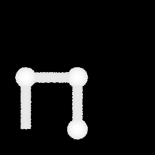
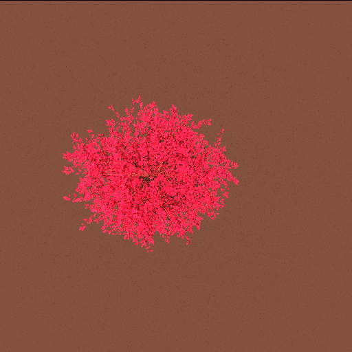
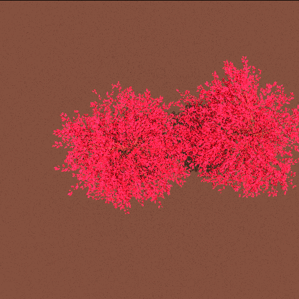

Basic librat / start operation
Librat is the library of function calls around which you can write your own code to do things such as read in and parse an object file, read in and parse camera, illumination files, waveband files and so on. However, start is a wrapper code around these commands which gives you access to all the basic operations, and so is the de facto tool for doing simulations. The key things required to carry out a simulation are:- A camera file
- An illumination file
- A waveband file
- An object file - this is always assumed to be the last file on the start command line
Anything specific you want to do in any of these parts of the process is specified in these files. There are a limited number of additional command line options which either allow you to override a few key things in these files (the waveband file for example), or more usually are external to these things. Each of these can be passed through via the -RAT keyword. Examples are the ray tree depth (-RATm) , verbose level (-RATv), waveband file (-RATsensor_wavebands) etc.
Example 1: simple object from lidar test
To run a simple lidar test, we consider a simple scene object test0.objmtllib plants.matlib
usemtl white
v 0 0 0
v 0 0 1
plane -1 -2
!{
usemtl white
!{
v 0 0 1000
ell -1 30000 30000 1000
!}
!}
This defines a material library plants.matlib that specifies the reflectance and transmittance properties of the scene materials.
srm white refl/white.dat
In this case, there is only a single material of type srm (standard reflectance material - Lambertian reflectance (and/or transmittance). The material name is white and the (ASCII) file giving the spectral reflectance function is refl/white.dat. The file refl/white.dat contains 2 columns: column 1 is wavelength, column 2 is reflectance for that wavelength (wavelength units are arbitrary, but we usually use nm). In this case, the file specifies:
0 1
10000 1
which is a reflectance of 1.0 for any wavelength (less than or equal to an arbitrary upper limit 10000). If the file specifies transmittance as well, this is given as a third column. The lines:
mtllib plants.matlib
usemtl white
specify that the material library plants.matlib is to be loaded (only one library can be loaded in current versions), and that material white is to be used for subsequent objects. The fields !{ and !} specifiy that a bounding box should be placed around objects contained within the brackets. This allows for efficient intersection tests in the ray tracing.
The fields v denote a vertex (vector) (as in the standard wavefront format). This requires 3 numbers to be given after the v giving the {x,y,z} coordinates of the vector. Note that v fields can specify a location or direction vector. The fields plane and ell specify scene objects. We will look at a fuller range of such objects later, but these two allow for a simple scene specification. plane is an infinite planar object. It is defined by an intersection point (location vector) I and a direction vector N. These vectors need to be defined before a call is made to the object, so in this case, we define I as 0 0 0 and N as 0 0 1, i.e. an x-y plane at z=0.
Thus plane -1 -2 means 'define a plane with N given by the previous (-1) specified vector that goes through I given by the second to last specified vector.'
ell is an ellipsoid object. Its description requires definition of: (i) the base (N.B. not the centre) of the ellipsoid (-1 here, meaning the previously-defined vector - 0 0 1000 in this case); (ii) the semi-axis lengths in x,y,z directions (30000 30000 1000 here).
so:
v 0 0 1000
ell -1 30000 30000 1000
is in fact a spheroid of x-y semi-axis length 30000 units (arbitrary linear units) and z-semi-axis length 1000 units: a prolate spheroid that extends from -30000 to 30000 in the x- and y-directions and from 1000 to 3000 in the z-direction.
Example 2: running start with another simple object
Another simple object file, test.obj:
!{
mtllib plants.matlib
v 0.000000 0.000000 0.000000
v 0.000000 0.000000 1.000000
usemtl soil
plane -1 -2
!{
#define
g object 0
usemtl stem
v 0 0 0
v 0 0 1
cyl -1 -2 0.1
sph -1 0.2
v -1 0 1
cyl -1 -2 0.1
!}
!{
clone 0 0 0 0 object 0
clone 0 1 0 90 object 0
clone -1 0 0 -90 object 0
!}
!}
Note the braced bounding boxes. The mtllib specifies the name of the material library (relative to the obj file in this case). This file points to the locations of the spectral information for all the materials in the object file (specified by the usemtl lines - soil and stem here), not the actual spectral information. The plants.matlib file might look like:
srm soil refl/price_soil.dat
srm stem refl/leaf.dat
and so on. Where srm line (surface reflectance material) specifies a material and then the name of a file which contains the actual spectral information. Those files look like:
450.00 0.048959
460.00 0.048783
470.00 0.048640
480.00 0.048541
490.00 0.048722
500.00 0.049784
510.00 0.056469
.........
where each line is a waveband and a reflectance value. If three columns are specified the third column is assumed to be transmittance (for leaves for example). If transmittance is specified then you can (if required) define a value for t / (r + t) in the waveband file i.e. this is the ratio of transmittance to single-scattering albedo (total scattering i.e. r + t) and is assumed to be 0.5 by default. This value is used to weight the probability of transmittance to reflectance at each interaction (with this material). So if for example r >> t for a specific wavelength then a weighting of 0.5 will be inefficiently sampling as many t rays as r rays, when the r rays are far more significant. In this case, specifying t/(r+t) will weight the sampling properly.
The object has a soil plane (material soil), defined by a "vertex" v which is the location
v 0.000000 0.000000 0.000000
and a normal
v 0.000000 0.000000 1.000000
i.e. normal is pointing vertically up. Then there is a #define group (g) called "object 0" is defined, which uses material stem, and is composed of a cylinder of radius 0.1, with base at 0 0 0 and tip at 0 0 1. The line
cyl -1 -2 0.1
specifies a cylinder with the bottom and top -1 and -2 vertex lines above this point in the file respectively. Then we have a sphere, located at the last vertex (v 0 0 1) and of radius 0.2, then another cylinder. So "cyl", "sph" and so on are the primitives that the ray tracer works with - it can also use ellipsoids (ell), closed cylinders (ccyl) and more basically, facets (f) defined by vertices e.g.:
v 0 0 0
v 0 1 0
v 1.41 1.41 0
f -3 -2 -1
defines an equilateral triangle in the x,y plane of side length 1, with 1 vertex at 0, 0, 0.
Returning to the file above, another cylinder is specified which has its base at 1 0 1 and its tip in the same location as the tip of the first one (the share this vertex line). This means the object is asymmetric so we can see the effect of rotating it during cloning. So although we have defined an object (object 0), we haven't actually invoked it yet. The lines:
!{
clone 0 0 0 0 object 0
clone 0 1 0 90 object 0
clone -1 0 0 -90 object 0
!}
define actual instances of the object "object 0". So we now clone the object 3 times, with the numbers in each case being
x, y, z, azimuth_angle
Running start
You can run start direct in interactive mode just by typing start on the cmd line. Thi waits for input and if you enter an unspecified option number it will list the available options:pallas% start
23
options:
-2 : print PID
-1 : print memory use
0 : quit
1 n s1x s1y s1z ... : set sun vectors
2 : print sun vectors
3 n b1 w1 ...i bn wn: set wavebands
4 : print wavebands
5 file.obj : read object file
6 fx fy fz dx dy dz : trace ray from f in direction d
7 : get and print materials
8 : print object information
9 : print info on materials used
10 : get and set verbosity level (0-1)
11 : get and print object bbox information
12 :
13 : same as 14 assuming filenames camera.dat light.dat
14 camera.dat light.dat : ray tracing using defined camera & illumination
15 : dont go there
16 cx cy cz sx sy nrows ncols rpp name : produce a height map in name
The simplest operation is to generate a simple height map (option 16)
set obj = test.obj
pallas% set obj = test.obj
pallas% echo 16 0 0 1000 3 3 256 256 1 $obj.zbuf | nice +19 start -v $obj
so here the option to start is 16, and we look from 0, 0, 1000 units at an area of 3 x 3 units, with an op image of 256 x 256 pixels, 1 ray per pixel and with an output image name of $obj.zbuf. The code outputs the progress of the simulation to the stderr channel. The op of the simulation is a HIPS format image (XXXX), a single frame of floating point values giving the height (in scene units) of the first object intercepted by a single ray in each pixel. If we look at the stats of the image using a HIPS utility called hipstats (included with the librat distribution in $BPMS/bin/x86_64/hipstats) we see:
pallas% hipstats test.obj.zbuf
Frame 0 : n=65536 mean=0.097 SD=0.313 Min=0.000 Max=1.200
i.e. the max height in the scene is 1.2 units as we would hope. We can display this image using either xv (which needs /home/mdisney/bin/x86_64 to be in your $path variable), by converting it to a byte format HIPS image using another HIPS utility (also included with the librat distribution), linear. This performs a linear contrast stretch, converts the output to byte format (0-255) and then writes the result to stdout so it can be piped to xv:
pallas% linear < test.obj.zbuf | xv -
which should look like:
|  |
| test1.gif |
We can do thesame via a wrapper script (xvc), which is in /home/plewis/bpms/bin/csh so you also need this in $path i.e.
pallas% xvc test.obj.zbuf
This is a quick way to test whether the obj file works as we expect it to and looks sensible.
Converting a HIPS file to something more generic
We can use hips2pbm, a HIPS utility (also included with the librat distribution) to convert to a pbm file (portable bit map):pallas% linear < test.obj.zbuf | hips2pbm > test.obj.zbuf.pbm
and then display the result using any number of things including ImageMagick:
pallas% display test.obj.zbuf.pbm
and we can use ImageMagick to any other format we like, via convert:
pallas% convert test.obj.zbuf.pbm test.obj.zbuf.gif
Running start using camera and light files
More often, we want to use start to simulate some type of sensor / observation characteristics. In this case we specify a camera file, a light file and the various spectral and simulation characteristics accompanying them. Then we can use option 14 to start, which expects the next two files to be the camera and light files respectively.A camera file looks like camera.test.dat (note all lines starting # are ignored - these are either comments or provide additional options which we will explore later):
camera {
#camera type - others are spherical, planar, albedo
camera.name = "simple camera";
#default is orthographic
geometry.perspective = TRUE;
#geometry
geometry.azimuth = 0.0;
geometry.zenith = 0.0;
geometry.twist = 0.0;
geometry.lookAt = 0, 0, 0;
geometry.boomLength = 10.;
geometry.idealArea = 5;
#geometry.fieldOfView = FOV;
geometry.boomLength = 10.;
samplingCharacteristics.nPixels = 262144;
samplingCharacteristics.rpp = 4;
#basic o/p
result.integral.mode = "scattering order"
result.integral.format = "ascii"
#result.integral.mode = "waveband"
result.image = "op.hips"
result.integral = "op.results"
#sampling options
#result.samplingImage = "samplingImage.hips"
#samplingPattern.OPImage = "testOPImage.hips"
#samplingPattern.sampleCountImage = "testsampleCountImage.hips"
#samplingPattern.gridMap = "testgridMap.hips"
#samplingPattern.size = 512,512;
#samplingPattern.form = "circular"
#samplingPattern.form = "gaussian"
#samplingPattern.sd = 50,50;
#samplingPattern.centre = 0,0;
#lidar options
#result.integral = "results_lidar.dat"
#result.integral.mode = "distance"
#lidar.nBins = 150
#lidar.binStart = 17.6
#lidar.binStep = 0.1
}
A light file looks like light.test.dat:
camera {
camera.name = "simple illumination";
geometry.azimuth = 0.0;
geometry.zenith = 0.0;
}
and we can run a simulation of this type as:
pallas% echo 14 camera.test.dat light.test.dat | nice +19 start -v -RATm 5 -RATsensor_wavebands wb.test.dat $obj
where -RATm 5 specifies 5 orders of scattering, the verbose level is set and the waveband file wb.test.dat looks like this:
0 450
1 550
2 650
3 850
The result is a HIPS image op.hips which has 4 frames, so we can generate a fcc image as follows:
pallas% reseq 3 2 1 < op.hips |linear | hips2pbm | xv -

The actual simulated data are in the file op.results.direct and look like:
- integral results, ordered by: scattering order (rows 5 ) waveband (cols 4 ) distance (frames 1)
- Distance (start of bin): -1.000000e+00
- Wavelength:
- 4.500000e+02 5.500000e+02 6.500000e+02 8.500000e+02
2 2.082191e-05 6.769709e-05 1.074853e-04 4.715291e-04
3 3.809157e-06 2.112662e-05 4.297797e-05 2.893788e-04
4 2.480746e-08 2.563754e-07 6.507600e-07 1.090333e-05
5 1.032238e-09 1.880159e-08 6.054241e-08 1.903158e-06
so the first 5 orders of scattering are as above (4 wb, left to right). To calculate the total scattering in each waveband we simply add up the individual interactions i.e.
pallas% grep -v # op.results.direct | gawk '{for(i=2;i<=NF;i++) r[i-1]+=$i;}END{for(i=1;i<=NF-1;i++) print r[i];}'
0.0437587
0.0758144
0.0967356
0.163228
And if we want to plot reflectance as a function of waveband we can do:
pallas% grep -v # op.results.direct | gawk '{for(i=2;i<=NF;i++) r[i-1]+=$i;}END{for(i=1;i<=NF-1;i++) print r[i];}' | paste wb.test.dat - | gawk '{print $2, $3;}' > op.results.direct.plot
pallas% generate_graph op.results.direct.plot
Now let's look at a much more complex example of a single birch tree, using the file Birch_new1.tmp.obj. We can edit the camera file to give a different o/p by changing the lines:
result.image = "birch.op.hips"
result.integral = "birch.op.results"
we can check t
pallas% set obj = Birch_new1.tmp.obj
pallas% echo 14 camera.test.dat light.test.dat | nice +19 start -v -RATm 5 -RATsensor_wavebands wb.test.dat $obj
pallas% reseq 3 2 1 < birch.op.hips | linear | hips2pbm | xv -
which looks a funny colour as linear stretches the range 0 - 1 to 0 - 255 by default. If we look at the image stats we see there's not much above 0.5 even in the NIR, so we can set a range for the contrast stretch which will make better use of the colours e.g.
pallas% reseq 3 2 1 < birch.op.hips | linear 0 0.6 | hips2pbm | xv -

Building scenes: combining multiple object files with #include
We can make combine multiple object files efficiently using #include e.g. in test.include.obj:mtllib plants.matlib
#include Birch_new1.include.obj
!{
v 0.000000 0.000000 0.000000
v 0.000000 0.000000 1.000000
usemtl soil
plane -1 -2
!}
clone 0 0 0 0 Birch_new1.tmp.obj 0
clone -2 0 0 55.35 Birch_new1.tmp.obj 0
!}
!}
Note the object file Birch_new1.include.obj is slightly modified from above - we have to remove the plants.matlib line and the soil plane as we already have one of those in our global object. However now we can duplicate this plant wherever we want in the scene at little extra computational cost.

Rotations and transformations
Clones can be rotated individually around the x, y, z axes by using Rx, Ry and Rz labels, followed by an angle e.g.
clone 0 0.555556 0 Ry 137.508
Clones can also make use of the povray type translation and scaling transforms (see
http://graphics.stanford.edu/~cek/rayshade/raynotes/6-transf/transfor.htm for more details). In this case, the transformation is defined as:
clone 0 0 0 Transform -0.001937 0.04222 -0.09063 -0.09989 -0.004583 0 0.004154 -0.09054 -0.04226 object
which transforms (translates, rotates and scale) the specified object. The first three numbers specify the standard x, y, z clone translation (move/shift) operation. The nine numbers following the Transform label (x1 - z3) describe a 3 x 3 transformation matrix, which can provide scaling and shear.
Material maps
This allows mapping of an image on to the surface of an object. To use a material map, each vertex in the object file must have a local (2D) coordinate associated with it e.g.
mtllib plants.matlib
v -20 -20 1
!n -1 0 0 1
!local -1 0 0
v -20 20 1
!n -1 0 0 1
!local -1 0 1
v 20 20 1
!n -1 0 0 1
!local -1 1 1
v 20 -20 1
!n -1 0 1 0
!local -1 1 0
usemtl leaf
f -2 -3 -4
f -1 -2 -4
Here, 4 vertices are defined, along with associated normal vector (!n vertexNumber dx dy dz) and local coordinate (within the range 0 to 1). The object represented above consists of two [[http://www2.geog.ucl.ac.uk/~plewis/ararat/html/matmap.html#f -2 -3 -4|triangles]], forming a square, defined over the local coordinate system (0,0) to (1,1). The material named leaf is used for these triangles. The file plants.matlib contains a definition of the material leaf:
matmap leaf leaf.matmap
which means the material named leaf is a material map (matmap), which is defined in the file leaf.matmap.
material_map: plewis.hips
attributes:
0 material0
1 material1
... etc
In this file, the actual map is given as the file plewis.hips, a byte HIPL-format image: